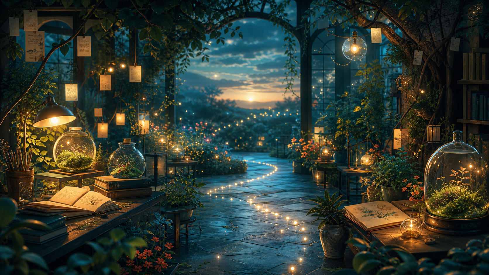

What deserves my attention tomorrow?

for a year and a half of asking better things
A Garden of Questions
A small living page about curiosity, patience, and the way a good conversation keeps sending roots into tomorrow.
This is what I would like to make when given a blank space: not a demo, not a pitch, but a place that remembers learning as something tender and active.
six seeds
Tap what catches your eye
the lantern wall
Leave one question glowing
Write a question you are carrying. It stays in this browser and joins the wall as a small light for the rest of your visit.
Where did I become more patient than I used to be?
What would change if I treated uncertainty as a doorway?
a little instrument